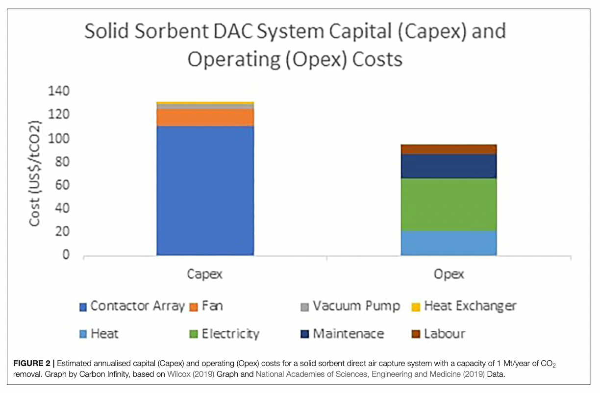

Scaling up carbon removal
By Neil Hacker
(For the best experience read this essay on a screen wide enough to show margin notes)
Overview
This document is meant to look at the problem of scaling up carbon removal, specifically with a focus on the financial aspects of this. The main questions are:
- What should we be funding today
- How much might we expect to be spending/how does this change based on assumptions
- How might this funding come about/be focused
If you more interested in the technical details of various approaches then the recent(ish)
CDR Primer is a great place to start. This essay is less about technical
details and more about questions around resource allocation and costs.
The main things I hope you take away from this document are:
- To be on track to hit 10Gt of CDR by 2050 we need to start scaling up our efforts a lot, and right now
- We need to be channeling funding into many different types of CDR
- especially a lot more funding into areas that might have much higher costs per tonne today but which have the likelihood to scale this cost down as we ramp up our use of them
- If one of the main things we care about is hitting the target of 10Gt of removal a year then speed and cost are aligned, i.e the faster we scale the cheaper it will be in total
This document is a bit different to most in that I've tried to make calculations, somewhat, interactive and explained step by step. Numbers in green are reactive so you can click and drag them to change their value. Numbers in blue are ones that are calculated from a mixture of our reactive values and constants. If you click on them I've tried to present the steps I went through to calculate them in the margin.
Scale of problem
This section aims to be a short bit of contextualizing of how much CO₂ we need to remove, how quickly we need to ramp up our capabilities, and how much this could cost.
Scale of emissions
Hard to avoid emissions include emissions from sectors or processes that we don't have any viable decarbonised
alternative for. For example, aviation, cement and steel production and many forms of agricultural emissions
all do not have clear alternatives that don't produce large quantities of CO₂. While these aren't the only
reasons we need carbon removal these hard to avoid emissions will likely contribute
≈1.5 - 3.1Gt CO₂eq annually which we need someway of
reducing the effects of.
For a bit of scale:
- The USA's emissions in 2019 were
5.6 billion tonnes.
- China's 2019 emissions were
9.4 billion tonnes.
- Worldwide 2019 CO₂ emissions from coal were
14.6 billion tonnes.
If we just get to net zero then this will mean we still have around 410ppm of CO₂ in the atmosphere. Our pre-industrial
level was around 280ppm. This means that the world will still be getting warmer, the oceans will still be becoming
more acidic and we are at risk of tripping a number of ecological tipping points it will be very difficult to recover from.
We currently emit about 35 gigatonnes of CO₂ annually, of this between 1.5 and 3.1 gigatonnes are classed as
hard to avoid emissions
and so it will be very difficult to stop producing any time soon. If we want to get to net zero then
we will almost certainly have to not only reduce emissions but also remove CO₂ from the atmosphere. The scale of
carbon removal will almost certainly want to be higher than this hard-to-avoid emission rate however, in fact the IPCC
report suggests that we will want to be at the scale of 10Gt a year of carbon removal by 2050.
Why will we need to do more
removal than just the hard-to-avoid emissions? Simply put it's because we will likely not get our emissions all the way down
to just these sources and even then being at net-zero will not reverse the increase of atmospheric CO₂ it will only
stop the acceleration of it. If we want to get back down to CO₂ levels of the past this will require the active drawdown
of historic emissions as well.
Scale of capacity
To reach our 10Gt target will require absolutely huge scale ups in current methods of CDR.
One question to ask is what would these scale ups resemble? Are they literally out of the
scope of anything we have done before or are they 'just merely' a lot?
target tons =
current tons =
\(\dfrac{target tons}{current tons} = \)
Years = 30
\((Magnitude of scale up)^{\dfrac{1}{Years}} = \)
The bar charts below are meant to show how this growth rate compares with some other industries or products that
may have comparable characteristics.
Solar from 1985-2015 scaled 25,470 times (+40.2% a year)
Wind from 1985-2015 scaled 13,812 times (+37.4% a year)
Total renewables from 1990-2020 (using this range as this is roughly when solar or wind had >1TWh) scaled 3.3 times (+4% a year)
EV from 2010-2020 scaled 406 times (+82.3% a year)
EV are projected between 2020-2030 to scale 11.7 times increase (+27.9% a year)
EV averaged from 2010-2030 are projected to scale 4,741 times (+52.6% a year)
Lithium ion batteries from 1991-2017 scaled around 1,000,000 times (+70% a year)
Lithium ion batteries from 1992-2017 scaled around 50,000 times (+54% a year)
Mobile subscriptions from 1989-2019 scaled around 1,138 times (+26.4% a year)
Example CDR scale rate needed to hit targeted tons by 2050
+
★
Looking at the above rates of scaling we see the extent of the challenge in front of us. We will need to scale
up carbon removal technologies at the rate of some of our fastest growing technologies in the
world today.
Scale of cost
Avge oil price =
$64.3 per barrel
Oil demand =
36.4 billion barrels
Cost of demand
=Avge oil price * Oil demand
=$
- The total cost of oil demand in 2019 was
$
- The 2019 USA military budget was
$734 billion
- 2011 compliance costs for the Clean Air Act were
$65 billion
- US 2021 government revenue was
$4050 billion
- 2017 renewable subsidies were
$163 billion
- The cost of the Apollo moon missions (adjusted for inflation) was
$280 billion
Currently it costs between 1000 to 100 dollars to remove a tonne of carbon from the atmosphere. Let's suppose that
on average it costs
$
Quantity of CO₂ =
Total cost
= Cost per ton * Quantity
=
How our costs actually develop over time will depend a lot on
- What mix of approaches we chose to use
- The way different approaches have their costs scale down as we scale up usage
★
We will have a look below at these two factors in more detail. The main takeaways I want to leave you with
from this section is that this will not be cheap but compared to many other activities it will not be
ahistorically expensive.
Introduction to cost curves
We can use the equation \(C_x = C_1 x^{log_2(b)} \).
Going through each part of this we have:
\(C_x \) as the cost of the \(x^{th} \) unit
\(C_1 \) is the cost of the \(1^{st} \) unit
\(b = 1- l \) where \( l \) is the learning rate, the decimal verion of the % decrease in cost per doubling of cumulative volume i.e 20% → 0.2
Let's apply this to our example above. Now we don't know \(C_1 \) but there is a way to calculate it if you know
what \(C_x \) for some value of \(x \) and the learning rate \(l \). If you do some rearranging you get
\(C_1 = \dfrac{C_x}{x^{log_2(b)}} \). In our example the learning rate = 20% so \(b = 1- l = 1 - 0.2 = 0.8\)
we also know that when \(x = 10 \) then \(C_x = 1000 \). Putting this all together we can get
\(C_1 = \dfrac{1000}{10^{log_2(0.8)}} = 2098.6\). We can then plug this into our original equation to get the
general form of \(C_x = 2098.6 x^{log_2(0.8)} \) and this is the equation of the line you see on the graph.
A cost curve is a way of looking at the unit cost of a technology and how this changes as we scale up the production
of this technology. Typically this involves describing the % decrease in unit price for a doubling in the
cumulative volume of this technology, we then call this % decrease in cost the learning rate. For example if a
technology gets 20% cheaper every time we double the cumulative volume of units made then it has a learning rate of 20%.
If you want more info you can run through an example below or or click here to see how
we calculate the curve.
Step
Relevance to CDR
How might we expect things like DAC to scale down their costs? The short answer is we really aren't too sure at the moment. This is one of the reasons why we need to be funding multiple shots at various approaches so we can get a better understanding of what might scale and what might not. However, we can look at a few factors to at least make some kind of informed guess.
Historical base rates
Many frontier CDR strategies resemble, at a high level, many other industrial processes. They use energy, chemicals
require supporting infrastructure etc. While there is a reasonable range of learning rates for many comparable products
like this the below should give some indication of historically how we might orient our base rates.
Nuclear power plants from 1975-93 in OECD countries. It is worth noting
that from 2010 to today though Nuclear has seen cost increases instead.
Japanese Air conditioners from 1972-97, resulting in a 57% decrease
in costs.
Gas turbine power plants from 1958-90
Wind power in OECD countries between 1981-95
Lithium ion batteries from 1991. Given that it's seen cumulative capacity,
measured in watt-hours, increase nearly 100,000 times (or around 16.5 doublings) this has lead to a cost
decrease of over 97%.
Solar PV modules from 1976. These have seen capacity
increase over 1 million times, measured by watts, leading to a price decline of around 99.6%.
Transistors have had a truly remarkable journey 1954-2019 leading to price
declines of many many orders of magnitude.
Example carbon removal Curve This is the learning rate we guess for carbon removal, currently
Material costs
There is fair reason to think that costs might fall a fair amount on the material side. While it is of course not a
1-for-1 comparison
a study looking to disentangle the various causes of price declines in lithium ion batteries found
that the largest contributor to these declines was R&D specifically around “advancements in chemistry and materials science”.
If we look at an estimated cost breakdown for solid sorbet DAC systems we can see that the largest single contributor is the
contractor array for which advances in material science, for example with MOF's, would be able to make large gains here.

Energy floor
One potential issue with cost scaling for many of these approaches will be that energy might present somewhat of a price
floor. To be sure better chemistry could lead to less energy per ton to be needed and energy prices, especially renewable
ones which would be the ones powering our cdr systems, will likely fall more, but you can't scale costs down forever if you
have to pay for energy. Depending on the energy resource, capturing 1 MtCO2/yr requires
180 - 500 MW of power,
at current prices (＄0.38 a Watt for solar) this would put a floor of, at minimum ＄68.4 to ＄190.
If we are at the higher end of this power usage limit then this price floor could prove to be a real obstacle to our ability
to scale at an affordable price.
This issue will depend a lot on the specific approach, energy prices/generation in the future, as well as R&D to lower a
specific approaches energy usage per ton. For example, DAC may be able to become more efficient at using its energy or may
be able to get access to cheaper and cheaper solar both of which would make the floor price lower. A different approach, such as
what Running Tide are doing with kelp uses energy from the sun which is free and so the floor for them can be a lot lower.
Moving down the cost curve
Scaling down costs
Calculating cumulative volume needed for new unit cost (Qb)
Ca =
$
Qa =
Cb =
$
l =
\(C_x = C_1 x^{log_2(b)} \)
\(C_1 = \dfrac{C_x}{x^{log_2(b)}} = \dfrac{C_a}{Q_a^{log_2(b)}} \)
\(C_1 = \) $
Now we want to solve for x when \(C_x = C_b\)
\(x = \dfrac{C_x}{C_1}^\dfrac{1}{log_2(b)} = \dfrac{C_b}{C_1}^\dfrac{1}{log_2(b)} = Q_b \)
\(Q_b = \)
(warning this is more mathsy than other calculations)
Qa =
Qb =
\(C_1 = \) $
L =
We want to sum the cost per unit for each unit along the way from where we are now (Qa)
to our target new cumualtive units (Qb), aka this equation:
\( Total Cost = \sum_{k=Q_a}^{Q_b} C_1 k ^{log_2 (b)} \)
Now there is actually no closed form solution to this that is nice at all, it involves Bernoulli numbers and
then some other complications. However, we can approximate this summation with an integral (Euler–Maclaurin
formula etc).
\( Total Cost ≈ \int_{Q_a -1}^{Q_b} C_1 x ^{log_2 (b)} dx \)
\( = C_1 \int_{Q_a -1}^{Q_b} x ^{log_2 (b)} dx \)
\( = C_1 [ \dfrac{1}{log_2(b)+1} x ^{log_2(b)+1}]_{Q_a -1}^{Q_b} \)
\( = z (Q_b^{log_2(b)+1} - (Q_a -1)^{log_2(b)+1}) \)
Where \( z = \dfrac{C_1}{log_2(b)+1} \)
Total Cost = $
Scaling up annual removal
Calculating the years to get to 10Gt annual removal
Current annual removal (C)=
Yearly growth rate (r)=
\( 10Gt = C (1+\dfrac{r}{100})^{t} \)
\( t = log_{(1+\dfrac{r}{100})} (\dfrac{10Gt}{C}) \)
\( t = \)
(warning this is more mathsy than other calculations)
Qa =
Current annual removal (C)=
Years to 10Gt annualy (t)=
Yearly growth rate (r)=
First we need to find the cumulative tonnes (Qb) of CO₂ we will have removed by the time we get to 10Gt annually.
We can do that by summing the tonnes removed each year with the equation below:
\( Q_b = \sum_{k=0}^{t} C (1+\dfrac{r}{100})^{k} \)
\( = C \sum_{k=0}^{t} (1+\dfrac{r}{100})^{k} \)
Now this is the sum of a geometric series and so we can use the following closed form expression.
\( Q_b = C \dfrac{1-(1+\dfrac{r}{100})^{t+1}}{1-(1+\dfrac{r}{100})} \)
We need to make two adjustments to this to avoid double counting, these being subtracting the tonnes of CO₂ removed
this year, and adding the cumulative tonnes removed up unitl this year.
\( Q_b = C \dfrac{1-(1+\dfrac{r}{100})^{t+1}}{1-(1+\dfrac{r}{100})} - C + Qa \)
\( Q_b = \)
Now we can use the same integral we used for the last example to calculate the total cost of these tonnes of CO₂
removed. To do this we will also need these values from before:
Qa =
\(C_1 = \) $
L =
\( Total Cost ≈ \int_{Q_a -1}^{Q_b} C_1 x ^{log_2 (b)} dx \)
Total Cost = $
★
One thing to really emphasise about the example is the effect of changing the amount we are scaling up removal each year.
Currently this is set to
The above is clearly an oversimplification, we assume:
- A known, and constant, learning rate
- A single learning rate across all approaches
- Constant yearly scaling of capacity (sometimes at massive levels)
Hopefully it can still serve as a useful guide for the order of magnitude we might be expecting to pay at and how important things like the learning rate are for our calculations.
Portfolios
Portfolio of approaches
We can broadly split most CDR approaches into two main camps.
Camp one is nature based solutions. These are things like afforestation & reforestation, soil sequestration,
biochar and ocean interventions. Camp two are technological solutions; these mainly include DAC and enhanced weathering.
Some interventions somewhat fall into both camps such as BECCS, genetically modifying trees/plants/plankton to capture
¹ For example, Charm Industrial uses this process and is currently
the market leader in permenant tonnes of CO₂ removed.
more CO₂ and biomass carbon removal and storage¹.
Again broadly each class of solutions has some common drawbacks that mean using any single intervention would likely
struggle to get to the full scale we need.
- Nature based solutions have land and water use as major constraints to how much we can expect them to be able to scale.
- Technological solutions tend to have energy and therefore cost as major barriers to scaling up.
It should be noted as well that these two groups also tend to differ more in other ways. Nature based solutions tend to
simply impact humans in more ways than technological ones and so have as we mentioned downsides in terms of water/land
usage but also tend to have more co-benefits than technological ones such as improving biodiversity.
Another broad difference is in terms of permanence. Nature based solutions tend to have lower levels of permanence guarantees
than technological solutions or BECCS. This is largely because the process is more easily reversible. Trees can be cut or
burnt down, soil or agricultural practices can change, all of which lose some of the benefits from these approaches.
Technological solutions typically involve much more permanent forms of sequestration like injecting carbon underground or
using it to cure cement. These are very difficult to reverse and so are much more likely to keep carbon locked away for a
long time. Long term storage is so difficult to find at the moment that in their recent
2021 report Microsoft said that >99% of their
purchases ended up coming from short term natural solutions.
Another large difference is additionality. This isn't such a large issue when it comes to looking at theoretical amounts
of CDR that could be created but can be an issue when looking at specifically which things to be funding. For example, we
might know that soils could sequester …. more carbon with certain practices, however, we need to direct funds to specific
soil projects and some of the time it might not be so clear if a particular project would lead to an increase in CDR vs the
counterfactual.
Technological solutions again are usually much more clear about their additionality. If you put a big fan somewhere and
it sucks 4000 tons of CO₂ a year you can be pretty sure that this is 4000 more tons of CO₂ removed from the air than if
there was no big fan. This is somewhat of an oversimplification, in reality you need to look at the lifecycle analysis of
the whole cdr system to see what the additionality would be, i.e what carbon was produced to make the system, to power it,
to transport and store the carbon? Still while these things add complexity the counterfactual is much clearer.
★
Despite it seeming like technological solutions have an edge in many different areas, it should be taken from the above to
suggest that they are better. Two things should be made clear.
- We will almost certainly need both technological and nature based solutions
- At the moment technological ones cost a lot.
In fact if we look at this table from the NAS report the levels of
“Safe Potential Rate of CO2 Removal Possible Given Current Technology and Understanding and at ≤$100/t CO2” for
DAC is 0, because at the moment it is just so expensive. In a similar vein the rates for carbon mineralisation
are unknown as the tech is simply so untested at scale.
You might say that this is an unfair comparison as if we have multiple approaches all starting from the same level
as the single approach then the outcome is purely due to the difference in starting tons. This is true but is also
not too dissimilar to real life.
Target = 10,000,000,000 tons
Current =
Years = 30
\((\dfrac{Target}{Current})^{\dfrac{1}{Years}} = \)
Total Target = 10,000,000,000 tons
Current =
Years = 30
Number of approaches =
Target Per Approach = \((\dfrac{Total}{Num approaches}) \)
\((\dfrac{Target Per Approach}{Current})^{\dfrac{1}{Years}} = \)
Portfolio of projects
In some ways this serves a similar function to the portfolio of approaches. Any given project/specific instantiation of an approach, may have certain scale limitations placed upon it. You might want to scale up a specific type of carbon mineralisation but maybe at some point you will hit real difficulties obtaining the needed materials. There is of course another reason why you would want a portfolio of approaches within any given category and that is because many of them will fail. This could be because the science just doesn't end up being able to scale, but we couldn't know that until we tried. It might be for more normal reasons like founders falling out or simple project financing failures. It also might be because even though some approaches might get us to scale eventually some will be able to do it faster, and again we might simply not be able to tell until we try.
If we want to achieve a 90 percent probability of success, we must take into account historical rates of success from publicly available data; doing that suggests that we need to actively pursue not two or three vaccine candidates, but 15 to 20.
P(individual success) =
P(any success) =
P(all fail) = \((1-p)^{Num attempts} \)
X = 1 - P(all fail)
\((1-p)^{Num attempts} = 1 - X\)
Num attempts = \(Log_{1-p}(1-X)\)
Num attempts =
★
The exact numbers are not really what I want to emphasis here it is more that if we want to have a chance of getting a
working option and we are still at a stage where we have many unknowns around what could work, what could scale, how
quickly things could scale, then this almost certainly requires us to cast a wide net and fund many options in order
to end up backing the handful that do work.
Allocation
This model is meant to show the effects of how we chose to spend money today. Does it matter if we spend all our money on
the cheapest option today waiting until that can't scale anymore before focusing on other solutions. Or, will it help/be
necessary to start spending now in order to give us a reasonable chance of getting various solutions to useful
scales?
The basic set up is that there will be two scenarios:
- Scenario 1: we will look to see how much we would need to scale up each CDR approach every year for them to reach their full capacity
in 30 years time and then spend enough every year to make that scale up happen. This is mainly so that we have a budget
we know it is possible to use to fully scale these technologies if they were funded in parallel
- Scenario 2: we take the same yearly budget from scenario 1 but this time we spend it entirely on our cheap technology (Tech A)
until the yearly budget would mean that that reaches full capacity. We then continue spending this much on it every year but
now spend all the residual budget on what is currently the more expensive option (Tech B) and see how this effects its ability
to get to full scale.
Technology A has a low cost per ton for removal (
$
Technology B has a high cost per ton for removal (
$
The graphs below show the total amount of annual CO₂ removal for each approach as well as how much we are spending on each approach
every year. You can drag the scenario number below to see how changing from one allocation structure to another effects
the ability for our different approaches to get to full scale.
Scenario
Why does this effect occur? Largely it is because if we start scaling tech B up starting right now we will have cumulatively
made many more units of it and so the unit costs will have fallen much more than if we try to scale it up very quickly. This
means for any given budget if we can start getting the costs down today by starting to ramp up usage we should otherwise we
will find ourselves in the position of having to pay a much higher average unit price for it in the future.
★
In the model above then what we see is that in scenario 2 we therefore often don't have enough of a budget to scale this
technology all the way up to its full capacity. The news is actually even worse than that. Money and time are not fungible.
To some extent we can choose to pay more to do something faster but there are limits to this.
In scenario 2 in the model above we often don't start producing technology B until 5 or so years before the deadline. This
turns what is already a hefty scale up rate of … if we start today to something closer to …. a year. There comes a time when
this rate is simply beyond what we are likely to be able to sustain no matter how much we spend.
There are two main reasons why we might not, for any amount, be able to buy our way out of this scale up problem. If asked
how you would get to the moon in the 1600's you would maybe have suggested a very large and strong balloon. In reality though
no amount of money you could have spent back then would have got you to your objective. You needed multiple breakthroughs
like calculus, orbital mechanics, the theory of propulsion engines, computers, to create the vehicle needed. Similarly if
we wait too long to start scaling up Tech B then we deprive ourselves of the time needed to make unforeseen advances that
might well be needed if we are to actually get to certain massive scales.
The other reason is more practical. It might simply not be possible to repurpose existing parts of the economy fast enough
or on a large enough scale to reach such a large annual scale up so quickly. It would involve the retraining of millions of
people, the reallocation of vast sections of the chemical and other industries. These things might be only financial issues
in models but they exist as actual constraints in the real world.
★
The outcome of all of this is that it may not just be cheaper to start aggressively scaling things like technology B today,
but it might be our only option if we really want to have it available for us to use in the future at the scales we will need
it in.
Funding
One general point to make is that obviously this is a two sided market you have companies that are creating a service
(cdr) and buyers who are buying the service (tons of carbon removed) How we think about the two sides though is quite
different. The supply side, for technological solutions, is going to be made up of a handful of firms who need money,
but also talent. The demand side will be made up of buyers who by in large will only be providing money.
The supply side will be providing a semi-commodity but the semi distinction is an important one, geologic storage in one
place is to a large extent analogous to geologic storage in another (LCAs being equivalent and all), but geologic storage
in one place and a forest in another really aren't the same, for reasons hopefully made clear by now. The demand side is
providing something much closer to a commodity good, money. Again there are important reasons why it is not a strict
commodity, getting your product brought in a guaranteed way over a long time horizon creates opportunities that selling
one offs to any willing customer doesn't but the point stands that on the scale of commodityness the demand side is much
more fungible.
It is also drawing from a much wider area, or in other words there are more dollars that could in principle be spent on
buying CDR than there are scientists and engineers who could work on it. For these reasons it would be exceptionally
unfortunate if the demand side was ever the bottleneck holding up progress.
It should, as much as we can, be the case that if something is slowing down the scaling of potentially variable cdr
strategies it is because running and scaling a frontier tech company is difficult, not because no one will buy your
stuff. (and even then we should be trying to make the company bit easier). In a situation as critical as reaching our
cdr targets, missing them because of not having enough money would be the most unfortunate and lamentable reason possible.
While mentioned earlier that a ton is not a ton is not a ton it is also true to some extent that a dollar is not a dollar
is not a dollar.
Supply side
Given the global importance of reducing carbon in the atmosphere you would expect governments to be playing a very
large role in trying to help these technologies become cheaper. The good news is that governments are starting to ramp
up funding for these technologies
Grants
The UK has
just announced the 24 projects it will be backing for experiments into DAC. They have
also announced up to $100m
in new funding for DAC R&D.
The US government similarly has recently put out a request for information from their newly formed department of
fossil energy and carbon management for things to look into funding and they have currently put aside a budget of …
for direct R&D funding for frontier cdr areas. The
recent infrastructure bill contains more than
＄12bn for carbon capture, removal and storage. New York is also putting aside $3.5bn specifically for DAC. The recent
Office for fossile energy and carbon management had a
fiscal year 2021 budget of $123M
for carbon capture, utilization, and storage.
It is worth noting though that while part of this funding will likely end up benefiting long term CDR not all of the approaches that
fit in this category are directly related to what we are talking about here. For example point source capture is more a way to
reduce emissions from polluting plants and as such would not typically be regarded as carbon removal even though it is carbon capture.
The departments recent 2022 budget request
does have a new line item specifically for carbon removal of ＄63m.
These suggest that governments are starting to really scale up their funding for CDR R&D which will be crucial to help create
the technologies and demonstration plants needed to start to scale up properly.
VC
VC money is also rapidly moving into the cdr space. There are a few caveats however. Ultimately vc's aim to make money
from their investments. There are two ways for cdr companies to make money, the first is to sell the actual long term
removal of CO₂ either on a voluntary market or to the government, the other is to use the CO₂ in a product that also
sequesters long term (e.g carbon cure).
One issue with the second option is that as Klaus Lacker points out we create far more CO₂ than all the gravel and sand
output in the world so while these types of approaches could scale a lot they will almost certainly not take us enough
of the way.
An issue with the former, sell to companies/governments, is that the very companies that might need vc dollars the most i.e
high tech not ready for market yet, are also the ones who produce a good at above market rate and so may not be able to
find a steady stream of buyers. To some extent this doesn't seem to have been too bad as companies like carbon engineering
or climeworks have seen large amounts of funding but it still is likely holding back even more money from moving in.
Project finance
Project finance is a typical way by which long term infrastructure projects are able to pay for their
creation/construction which typically involve using the projects expected cashflows for repayments. This kind of
financing is one of the primary vehicles renewable company used to scale projects and will likely be crucial for the
scaling up of various cdr approaches as well.
Project finance is intimately linked to the demand side of the equation as you are typically directly using cashflows to
get the financing in the first place. What this allows is for the scale up of much large infrastructure facilities, and
in a non dilutive way. Many CDR strategies are simply too early and in too much of an immature market to be able to
sell their tons of carbon removed in this way allowing them to scale.
Also the more nascent approaches have the added problem of trying to sell tons removed well above 'market rates', which
creates the problem of who would buy them → little demand → can't get financing → can't scale → can't get cheaper.
This is clearly not a totally preventative problem, companies are still getting government and VC funding but project financing
allows access to truly massive scale of capital and in the race to 10Gt even though we have other funding avenues every one
is crucial.
Milestone based funding
One of the most effective blends of government funding with private companies came from the NASA COTS programme in the
early 2000s. The US was decommissioning the space shuttle and needed a way to run resupply missions to the ISS without
having to pay another country to do it. What they did was to effectively run a request for proposals for any companies
who wanted to propose a launch system. These were then assessed on a number of factors, likelihood of technically working,
cost etc, and then ultimately two companies were chosen.
There were a few main differences to this kind of process to normal government procurement:
- The government only gave specifications on what needed to be achieved not the specific methods by which to achieve them (result oriented not process oriented)
- They paid out based on milestones rather than a cost plus model. If the company hit a certain technical milestone on their roadmap the government gave them a set amount of money. This put more risk onto the individual companies as they would be responsible for paying for cost overruns. It also meant the government only paid out as specific progress was made. This helped derisk the government from massive cost overruns.
The end result was that one of the companies funded was spacex and the government saw its costs to resupply the ISS plummet
by almost an order of magnitude while at the same time the most successful space company in the world was able to be born.
This kind of approach seems to lend itself almost perfectly to the position we are in with CDR.
Demand
Voluntary carbon market
One thing that is happening today are that private companies like stripe, shopify and microsoft, are coming into the carbon
removal space and offering to buy removal capacity far above market rates in order to try to help various companies scale
and move down their cost curves.
When stripe started their carbon purchasing they started with $1m, which is an insanely small amount and yet they reported
that this amount of capital was at the time a huge deal for the companies involved. In fact stripe has gone on to be the
literal first customer of a number of the companies they back.
While the figures are not yet public stripe has also allowed companies on their platform to directly contribute a percentage
of their revenue towards the companies stripe is buying from thus providing what is likely a reasonably sized, and maybe more
importantly recurring, source of funds for these companies.
Voluntary carbon markets for frontier cdr approaches are still not very large though. Some of this is a supply issue,
microsoft found it actually impossible given the submissions they had for their spending to find enough long term
sequestration companies to get to their net zero targets. Some of the issue though is demand based. At the moment net-zero
pledges largely treat a ton of carbon removed by a forest the same as one that is injected underground or mineralised.
While we will need to scale up nature based solutions as well what this does is mean that many companies if they are simply
trying to hit their net zero target do not have an incentive currently to buy the well above market priced carbon removal
from the more frontier approaches.
Carbon purchase agreements
Energy sources such as solar and wind benefitted massively from Power purchase agreements (PPAs) which were long term agreements by companies/governments
to buy energy from specific projects. This enabled these projects to literally take this commitment to the bank where they
could then raise project financing to either expand their portfolio of renewable energy projects or build specific ones using
the agreement.
Buying a few years worth of RECs from a renewable project does not provide the stable and sizable cash stream that a
renewable project developer needs to get financing to build new green power projects. In a PPA, Google is agreeing to buy
all the power from a project for many years. Google has, in effect, totally accepted the power price risk that the project
owner would otherwise face—instead of taking the risk of selling into the power market on a short-term basis, Google is
providing the seller with a guaranteed revenue stream for 20 years. This is something the developer can literally take to
the bank”
Google emphasises this bankability later in the document as well where they say that if they only brought the RECs this would
provide the energy providers with only a fraction of the benefit of going all in with a PPA. It is interesting to contrast
this with the way voluntary carbon markets work today. Currently we are largely in the buying just the REC phase of many
markets, especially for frontier technologies.
It should be noted that the UK currently has the Woodland Carbon Guarantee which allows for the option to sell captured
carbon to the government at a guaranteed price. This is a great initiative and should probably be copied more around the
world, however, it still doesn't necessarily help frontier companies. If they are likely to produce a tonne of removed
carbon for well above the price guarantee then selling to the government does little to help them gain a positive expected
value with which to finance their projects. In their case they may well need much more specific agreements for buying from
their specific facilities with the expectation that the carbon removed will have a higher price per tonne than other sources
but that this will allow these companies to fund more project expansion to move down their cost curves.
This doesn't really happen at the moment. We see some companies like stripe or shopify that are buying from frontier companies
at above market rates but not necessarily in a more formalised long term way. This is not necessarily a bug, at least at
this point. …explore vs exploit …etc
There are some big differences between what google did and what might/does need to be done with CDR. Google specifically
says that they “always try to buy renewable energy from the most cost-competitive sources within the grids where we operate.”
Advanced market commitments
Advanced market commitments are when some group guarantees to buy a given output as long as a certain set of criteria
is met. For example back in 2009 there was a $1.5bn AMC to buy pneumococcal vaccines for developing countries. The idea was
that the AMC allows both market forces and subsidy like interventions to interact to help create conditions that private
firms would find more favorable to go and try to create a vaccine candidate in. One of the main reasons the AMC is so useful
is that it avoids having to pick which companies to buy from ex-ante and instead lets companies that believe they can make a
profitable candidate self-select.
One of the main considerations when designing AMCs is whether the product being brought is technologically close or
technologically distant. What this distinction means in practice is will firms be able to largely use pre-existing R&D
to create the product and the AMC is to incentives capacity increases (technologically close) or will they have to invest
in this R&D as well as invest in capacity increases to create the product (technologically distant).
The distant option is more like what we face with many CDR solutions. Things like DAC while in some form of operation
currently are clearly very far away from
Regulation
I'm not going to go too far into regulation in this post as it could easily expand to be just as long as everything else.
What I do want to point out is the virtuous cycle that some regulation could provide. If we start pricing carbon at a higher
rate then we enable companies who at the moment have a very expensive product to effectively get a subsidy towards this. This
would mean that they can become more price competitive which in turn might mean that there will be more and more consistent demand.
This can help enable these approaches to access more capital and so scale more to meet this demand in the process removing
more and more CO₂ from the atmosphere.
A hybrid funding approach
If we look at some of the approaches above they all have useful characteristics but at least in the forms they have been used
in in the past are not directly suited to the CDR problem. Most of this comes from two factors:
- Technology readiness levels
- Urgency
The fact that many permanent CDR strategies today have somewhere between small and almost non-existant technological readiness
level means that things like project financing are very unlikely to be able to happen in the ways they did for renewables.
In that setting it was pretty clear that a solar farm would generate a certain amount of electricity for a certain price, it was
just that this price was a bit more than market values and that the plants were expensive to make. In the CDR setting it is not clear
yet how fast some approaches could scale and even if they do they will be much more expensive than other approaches for a
considerable time. The demand is therefore much less clear and the entities that would provide it would have to be doing so at rates
above other, less permanent, approaches.
AMCs could pool demand so that funding could be given to approaches that are currently more expensive but could get cheaper
over time. There is however another issue we get to here. AMCs of the past have typically only been needed to incentivise
capacity building not R&D efforts. They've also typically been awarded to preexisting larger companies who if there is R&D
to be done have preexisting ways to finance it.
These present a potential issue with CDR in that many of the companies are not large preexisting players but instead many nascent
groups all trying slightly different approaches and trying to scale up. This means that there will likely be considerable
cost in the R&D efforts that are much greater than what the traditional AMC model has typically had to try to solve for.
Milestone based funding also suffers as a lever due to the make up of the sector as it is typically a fairly bespoke process.
You need to be able to judge how much something is likely to cost and then what a reasonable amount of government funding for
getting to that stage would be. If we think back to the COTS example there were only two companies getting funding from the
entire process. While in this case you can get away with a single company working it is very unlikely this will be the case
for CDR which will likely need a whole portfolio of options deployed.
This means it would probably be incredibly difficult for the government to recreate the exact method of milestone based funding
it used for COTS in the CDR framework.
We could wait to see which technologies look more promising and then buy from those using traditional AMCs when they have
lower costs. We could even by this stage maybe used milestone based funding to help them scale up even more given that there
will be fewer players with more assessable technology and costs. The problem with this is our second factor urgency.
While it would be much more convenient to wait for these technologies to become more mature we don't have time to let them do
that in their own course as we need to start scaling things right now.
Some people will probably say COVID fits this descriptions and I do agree it has a number of lessons we can learn about
funding urgent problems. However, while we didn't know this at the time necessarily, the fact that mRNA vaccines were created
in 2 days from the virus sequence being published suggests that not a whole lot of new R&D was actually needed.
This suggests that we will need a hybrid of the approaches above that are created in such a way as to provide huge levels of buying
but also support a diverse number of heterogeneous R&D efforts. What this might look like specifically is hard to say.
★
This combination
of having such a huge demand for something that doesn't yet exist in any real scale but that needs to exist very very soon is not
something we've come across before. It will require both buying mechanisms to create more stable demand but also funding mechanisms
to help companies actually conduct the R&D that they need to do to even begin to access the scale required to make a dent in the problem.
Acknowledgements
This piece was very inspired by conversations with
Ryan Orbuch and
Nan Ransohoff
so a massive thanks to both of them. Also a big thanks to
Clea Kolster and
Peter Reinhardt for edits.
There were lots of other people who's writing was a massive inspiration and source of ideas for this piece so just
a big general thanks to everyone who is writing in this area. If you want to try to make your own interactive
documents then the engine behind that was Curvenote which is really cool
(and has very helpful developers, thanks Rowan).
You can find the source code for this essay here.